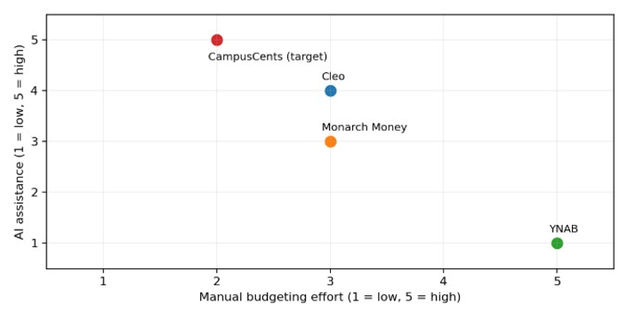

CampusCents Competitive Landscape
Download Competitive Landscape PDF
Competitor Map
The competitor map compares CampusCents with Cleo, Monarch Money, and YNAB based on two factors, manual budgeting effort and AI assistance. Each competitor was assigned an estimated score from 1 to 5 using findings from the interviews and competitor teardowns. Cleo provides strong AI assistance through its chatbot but requires users to interact with it for certain tasks. Monarch Money offers financial tracking and AI features but still requires some manual budgeting effort. YNAB relies heavily on manual budgeting with limited AI assistance. CampusCents is positioned as a proposed solution that aims to reduce manual effort while providing stronger AI-driven financial recommendations.

Competitor Comparison Table
The competitor comparison table identifies the strengths and weaknesses of each application and highlights opportunities for CampusCents.
| Competitor | Strengths | Weaknesses / Research Findings | CampusCents Opportunity |
|---|---|---|---|
| Cleo | Conversational AI, engaging chatbot, automated savings | Chat interface requires too many steps for quick spending decisions | Safe-to-Spend dashboard widget |
| Monarch Money | Comprehensive financial tracking, detailed dashboards, AI assistance | Interview participant wanted more proactive mid-month budgeting guidance | AI Mid-Month Auto-Balancer |
| YNAB | Structured zero-based budgeting, spending awareness, financial discipline | Manual categorization and maintenance can overwhelm users | Smart Auto-Categorization |
| CampusCents (Proposed) | Student-focused budgeting, AI recommendations, simplified financial management | Features still require implementation and validation | Combine automation, simplicity, and proactive financial guidance |
The comparison reveals that each competitor approaches financial management differently. Cleo focuses on conversational AI and automated savings, Monarch Money emphasizes comprehensive financial tracking, and YNAB promotes structured budgeting habits. The interview findings suggest opportunities to improve convenience, reduce manual effort, and provide more timely financial guidance. CampusCents could combine these advantages into a simpler experience designed for college students. Rather than replacing existing budgeting methods entirely, the goal is to make financial information easier to understand and act upon.
Ranked Switching Triggers
The ranked switching triggers identify the main reasons users might consider switching from their current budgeting applications to CampusCents.
| Rank | Switching Trigger | Supporting Evidence | CampusCents Response |
|---|---|---|---|
| 1 | Excessive manual budgeting work | YNAB participant stopped using the app because maintaining transactions became overwhelming (LOG-03) | Smart Auto-Categorization |
| 2 | Financial guidance arrives too late | Monarch Money participant wanted recommendations before overspending occurred (LOG-02) | AI Mid-Month Auto-Balancer |
| 3 | Too many steps to check spending | Cleo participant found chatbot interactions inconvenient for quick spending decisions (LOG-01) | Safe-to-Spend widget |
| 4 | Declining engagement with budgeting tools | Cleo participant reported that chatbot novelty faded over time (LOG-01) | Quick, actionable financial insights |
The switching triggers were ranked based on the severity of the problems described in the interview findings and their potential impact on continued app usage. Excessive manual budgeting work received the highest priority because the YNAB participant reported abandoning the application due to its complexity. Delayed financial guidance ranked second because it limits users' ability to correct spending habits before exceeding their budgets. Inconvenient access to spending information ranked third, followed by declining engagement with budgeting tools.